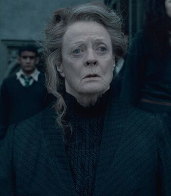
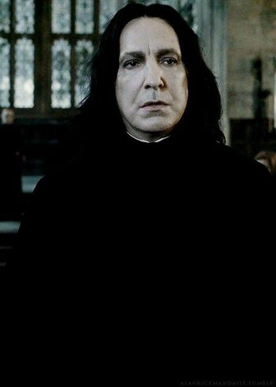
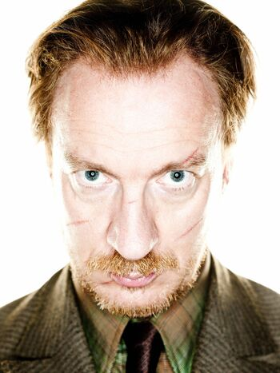

Albus Percival Wulfric Brian Dumbledore
Fue profesor de Transformaciones y más tarde director del Colegio Hogwarts.
También se desempeñó como Jefe Supremo de la Confederación Internacional de Magos
y como Jefe de Magos del Wizengamot y era un mago de sangre mestiza.
(4 de marzo de 1881 - 30 de junio de 1997 (116 años),

Minerva Mcgonagall
Era una bruja y una animaga registrada que asistió al Colegio Hogwarts de Magia
y Hechicería entre 1947 y 1954 y fue seleccionada para la Casa Gryffindor. Después
de sus estudios, trabajó durante dos años en el Ministerio de Magia y más tarde
regresó a Hogwarts, donde se convirtió en Jefa de la Casa Gryffindor, profesora
de Transformaciones y al mismo tiempo, subdirectora

Severus Snape
Fue Maestro de Pociones (1981-1996), profesor de Defensa Contra las Artes Oscuras (1996-1997)
y director (1997-1998) de Hogwarts, a la que asistió como estudiante desde 1971 hasta 1978.
Snape desempeñó un papel esencial en las dos guerras contra Lord Voldemort.
(1960 - 1998)

Remus John Lupin
u sangre es mestiza y en su niñez fue mordido por el Hombre lobo Fenrir Greyback. Remus acudió
al Colegio Hogwarts de Magia y Hechiceria y fue seleccionado en la Casa Gryffindor y se hizo
amigo de tres magos en particular, James, Sirius y Peter, con los cuales formó el grupo conocido
como Los Merodeadores. En su quinto año fue nombrado Prefecto de su casa. Luego de salir de Hogwarts,
se convirtió en un miembro de la Orden del Fénix junto a sus amigos del colegio, para luchar contra
Lord Voldemort y sus Mortífagos.
En el año escolar 1993-1994, Remus aceptó una plaza en el Colegio Hogwarts de Magia y Hechicería
como profesor de Defensa Contra las Artes Oscuras, pero al finalizar el año tuvo que abandonar el puesto
ya que al Profesor Snape se le "escapó" que él era un hombre lobo en la mesa de Slytherin.
(1960 - 1998)